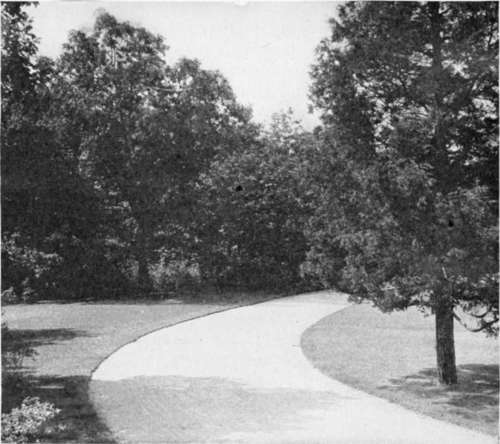

Chapter XXXV. On Planting Shade Trees
Description
This section is from the book "Landscape Gardening", by Andrew Jackson Downing. Also available from Amazon: Landscape Gardening.
Chapter XXXV. On Planting Shade Trees
NOW that the season of the present is nearly over; now that spring with its freshness of promise, summer with its luxury of development, and autumn with its fulfilment of fruitfulness, have all laid their joys and benefits at our feet, we naturally pause for a moment to see what is to be done in the rural plans of the future.
The planting season is at hand. Our correspondence with all parts of the country informs us that at no previous time has the improvement of private grounds been so active as at present. New and tasteful residences are everywhere being built. New gardens are being laid out. New orchards of large extent are rapidly being planted. In short, the horticultural zeal of the country is not only awake — it is brimful of energy and activity.
Private enterprise being thus in a fair way to take care of itself, we feel that the most obvious duty is to endeavor to arouse a corresponding spirit in certain rural improvements of a more public nature.
We therefore return again to a subject which we dwelt upon at some length last spring — the planting of shade-trees in the streets of our rural towns and villages.
Pleasure and profit are certain sooner or later to awaken a large portion of our countrymen to the advantages of improving their own private grounds. But we find that it is only under two conditions that many public improvements are carried on. The first is, when nearly the whole of the population enjoy the advantages of education, as in New England. The second is, when a few of the more spirited and intelligent of the citizens move the rest by taking the burden in the beginning upon their own shoulders by setting the example themselves, and by most zealously urging all others to follow.
* Original date of November, 1847.
The villages of New England, looking at their sylvan charms, are as beautiful as any in the world. Their architecture is simple and unpretending — often, indeed, meagre and unworthy of notice. The houses are surrounded by inclosures full of trees and shrubs, with space enough to afford comfort, and ornament enough to denote taste. But the main street of the village is an avenue of elms, positively delightful to behold. Always wide, the overarching boughs form an aisle more grand and beautiful than that of any old Gothic cathedral. Not content, indeed, with one avenue, some of these villages have, in their wide, single street, three lines of trees, forming a double avenue, of which any grand old palace abroad might well be proud. Would that those of our readers whose souls are callous to the charms of the lights and shadows that bedeck these bewitching rural towns and villages, would forthwith set out on a pilgrimage to such places as Northampton, Springfield, New Haven, Pittsfield, Stockbridge, Woodbury, and the like.
When we contrast with these lovely resting places for the eye, embowered with avenues of elms, gracefully drooping like fountains of falling water, or sugar maples swelling and towering up like finely formed antique vases, some of the uncared for towns and villages in our own state, we are almost forced to believe that the famous common schools of New England teach the aesthetics of art, and that the beauty of shade trees is the care of especial professorships. Homeland Virgil, Cicero, Manilus, and Tully, shades of the great Greeks and Romans! — our citizens have named towns after you, but the places that bear your names scarcely hold leafy trees enough to renew the fading laurels round your heads! — while the direct descendants of stern Puritans, who had a holy horror of things ornamental, who cropped their hair, and made penalties for indulgences in fine linen, live in villages overshadowed by the very spirit of rural elegance!
It is neither from a want of means, or want of time, or any ignorance of what is essential to the beauty of body or of mind, that we see this neglect of the public becoming-ness. There are numbers of houses in all these villages, that boast their pianos, while the last Paris fashions are worn in the parlors, and the freshest periodical literature of both sides of the Atlantic fills the centre-tables. But while the comfort and good looks of the individual are sufficiently cared for, the comfort and good looks of the town are sadly neglected. Our education here stops short of New England. We are slow to feel that the character of the inhabitants is always, in some degree, indicated by the appearance of the town. It is, unluckily, no one's especial business to ornament the streets. No one feels it a reproach to himself, that verdure and beauty do not hang like rich curtains over the street in which he lives. And thus a whole village or town goes on from year to year, in a shameless state of public nudity and neglect, because no one feels it his particular duty to persuade his neighbors to join in making the town in which he lives a gem of rural beauty, instead of a sorry collection of uninteresting houses:*
Fig. 45. Goon Shade Trees on Home Grounds.
It is the frequent apology of intelligent persons who live in such places, and are more alive to this glaring defect than the majority, that it is impossible for them to do anything alone, and their neighbors care nothing about it.
One of the finest refutations of this kind of delusion exists in New Haven. All over the Union, this town is known as the "City of Elms." The stranger always pauses, and bears tribute to the taste of its inhabitants, while he walks beneath the grateful shade of its lofty rows of trees. Yet a large part of the finest of these trees were planted, and the whole of the spirit which they have inspired, was awakened by one person — Mr. Hillhouse. He lived long enough to see fair and lofty aisles of verdure, where, before, were only rows of brick or wooden houses; and, we doubt not, he enjoyed a purer satisfaction than many great conquerors who have died with the honors of capturing kingdoms, and demolishing a hundred cities, †
Let no person, therefore, delay planting shade trees himself, or persuading his neighbors to do the same. Wherever a village contains half a dozen persons zealous in this excellent work of adorning the country at large, let them form a society and make proselytes of those who are slow to be moved otherwise. A public spirited man in Boston does a great service to the community and earns the thanks of his countrymen by giving fifty thousand dollars to endow a professorship in a college; let the public spirited man of the more humble village in the interior also establish his claim to public gratitude by planting fifty trees annually along its public streets in quarters where there is the least ability or the least taste to be awakened in this way, or where the poverty of the houses most needs something to hide them, and give an aspect of shelter and beauty. Hundreds of public meetings are called, on subjects not half so important to the welfare of the place as this, whose object would be to direct the attention of all the householders to the nakedness of their estates, in the eyes of those who most love our country, and would see her rural towns and village homes made as attractive and pleasant as they are free and prosperous.
* We now have these duties delegated, in many cities and towns, to tree wardens, city foresters, park superintendents, town planning boards or other responsible — and sometimes competent — persons. — F. A. W.
† It is a matter of general regret that the famous New Haven green should have lost its elms in recent years. It will be many a long summer before that remarkable town common resumes its former glory. — F. A. W.
We pointed out in a former article the principle that should guide those who are about to select trees for streets of rural towns — that of choosing that tree which the soil of the place will bring to the highest perfection. There are two trees, however, which are so eminently adapted to this purpose in the Northern States, that they may be universally employed. These are the American weeping elm and the silver maple. They have, to recommend them, in the first place, great rapidity of growth; in the second place, the graceful forms which they assume; in the third place, abundance of fine foliage; and lastly, the capacity of adapting themselves to almost every soil where trees will thrive at all.*
These two trees have broad and spreading heads, fit for wide streets and avenues. That fine tree, the Dutch elm,† of exceedingly rapid growth and thick dark green foliage, makes a narrower and more upright head than our native sort, and, as well as the sugar maple, may be planted in streets and avenues, where there is but little room for the expansion of wide spreading tops.
* The weeping elm has not fulfilled Mr. Downing's expectations; the silver maple has more than done so. It is now planted by hundreds of thousands along the streets of middle western cities and towns. — F. A. W.
† The Dutch elm has almost disappeared from American nurseries and from American landscape practice, but it is still a good sort of tree. — F. A. W.
No town where any of these trees are extensively planted can be otherwise than agreeable to the eye, whatever may be its situation or the style of its dwellings. To villages prettily built they will give a character of positive beauty that will both add to the value of property and increase the comfort and patriotism of the inhabitants.
Continue to:
- prev: Trees In Towns And Villages. Continued
- Table of Contents
- next: Chapter XXXVI. How To Popularize The Taste For Planting